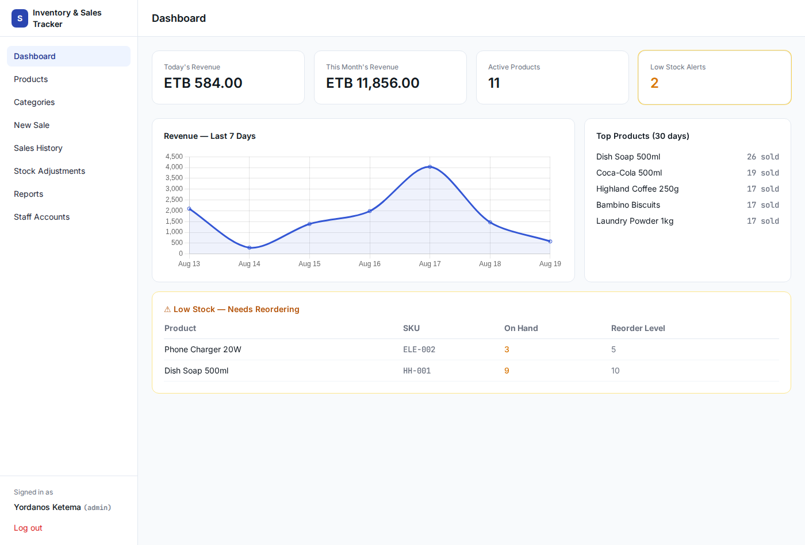
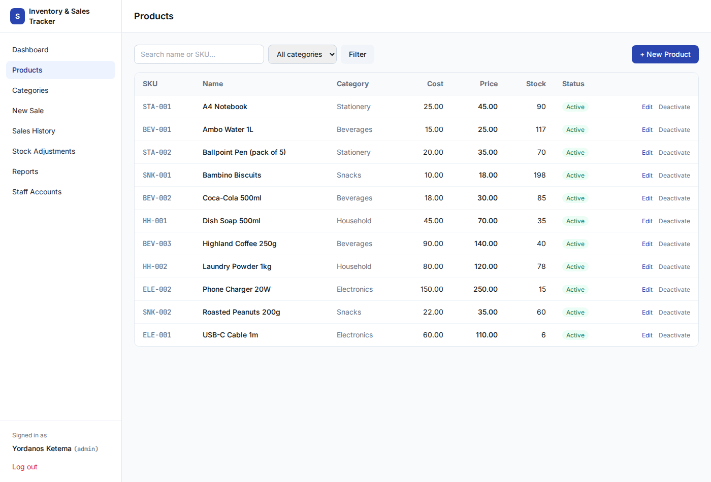

Yordanos Ketema
BI Analyst turning raw data into decisions — comfortable across SQL, spreadsheets, Python, and Power BI, and equally at home with web and database work.
Background
I'm a BI Analyst based in Addis Ababa, Ethiopia. I like working end-to-end on data — pulling it out of a database, cleaning it up, modeling it properly, and building something a non-technical reader can actually understand at a glance.
I'm currently open to full-time roles across a few adjacent areas, since I'm equally comfortable on the analysis side and the systems side of data work:
B.A. Business Administration & Information Systems
COVID-19 Global Data Analysis
One dataset — Our World in Data's COVID-19 records, 210 countries, Jan 2020 to Apr 2021 — analyzed four different ways. Every headline number is cross-checked across all four, including a continent-aggregation pitfall I caught and fixed the same way in each tool. Pick a tab.
SQL exploration — SQLite
14 queries against a SQLite database built from the raw data — from basic filtering up through joins, CTEs, window functions, temp tables, and a view. Includes a documented fix for a common pitfall: naively grouping cumulative totals by continent silently returns the wrong number.
-- Rolling vaccination % of population, via CTE + window function WITH pop_vs_vac AS ( SELECT d.location, d.date, d.population, v.new_vaccinations, SUM(v.new_vaccinations) OVER ( PARTITION BY d.location ORDER BY d.date ) AS rolling_people_vaccinated FROM CovidDeaths d JOIN CovidVaccinations v ON d.location = v.location AND d.date = v.date WHERE d.continent IS NOT NULL ) SELECT *, ROUND(100.0 * rolling_people_vaccinated / population, 2) AS pct_population_vaccinated FROM pop_vs_vac ORDER BY location, date;
Excel dashboard — formula-driven
Nothing here is hardcoded. Country and continent summaries are built with SUMIF / MAXIFS / RANK / INDEX-MATCH straight off 81,000+ rows of raw data, so the whole workbook recalculates if the source data changes. KPI cards and four charts pull live from those formula sheets.

Python notebook — pandas + matplotlib
A narrated, executed notebook — cleaning, EDA, and visualization, ending with a deliberately cautious look at vaccination rate vs. death rate. The point of that last chart isn't a correlation, it's showing why a 4-month snapshot is the wrong data to draw one from.


Power BI — interactive dashboard
Built on a proper star schema (one fact table, two dimension tables) with custom DAX measures — including a continent-total measure that correctly sums each country's own cumulative figure, rather than the naive version that silently grabs whichever single country peaked highest. The screenshot below shows both slicers live — click a continent or drag the date range to cross-filter. (Public web embedding is disabled by my school's Power BI admin policy — download the file to try it interactively, or happy to walk through it live.)

Ethiopia & East Africa Economic Analysis
A self-sourced dataset this time — World Bank indicators for Ethiopia, Kenya, Uganda, Tanzania, and Rwanda, pulled and reconciled from public sources rather than a pre-cleaned download. The headline finding: Ethiopia leads the region on population and total GDP, but Kenya actually leads on GDP per capita — total and per-capita tell opposite stories, and this project shows both rather than picking the flattering one.
SQL exploration — SQLite
10 queries combining two data sources with different update schedules — population/GDP run through 2023-24, broader indicators only to ~2012, and every query is explicit about which it's using. Includes window functions (LAG, rolling averages, RANK), a CTE-based inflation classifier, and a multi-source JOIN that recomputes GDP-per-capita directly rather than trusting a separately-vintaged column.
-- GDP per capita, recomputed directly from two source tables -- rather than trusting a separately-vintaged indicator column SELECT p."Country Name", p.Year, p.Population, g.GDP_current_USD, ROUND(g.GDP_current_USD / p.Population, 2) AS gdp_per_capita_usd FROM Population p JOIN GDP g ON p."Country Name" = g."Country Name" AND p.Year = g.Year WHERE p."Country Name" IN ('Ethiopia','Kenya','Uganda','Tanzania','Rwanda') ORDER BY p."Country Name", p.Year;
Excel dashboard — formula-driven
Same formula-driven approach as the COVID dashboard — MAXIFS/SUMIFS pulling live off raw data sheets. Building it surfaced a real bug worth mentioning on its own: the first version divided 2023 GDP by 2024 population (mismatched years from the two source files), quietly producing a wrong per-capita figure. Fixed by aligning both to the same year before dividing.

Python notebook — pandas + light forecasting
EDA plus a genuinely predictive piece: a 10-year Ethiopia population forecast using two methods — a linear trend and a compound growth rate — shown side by side so the divergence between them is visible, with honest caveats about what a simple trend model can't capture (migration, fertility shifts, the demographic transition).


Power BI — interactive dashboard
Star schema with a country dimension and two fact tables kept deliberately separate (population/GDP vs. the older indicator set) rather than force-joined, so the dashboard never implies a false connection between mismatched years. DAX measures handle the same year-alignment fix from the Excel version, plus a few LASTNONBLANK lookups since not every country reports every indicator in every year.

REGALFRONT Consultancy PLC — Full-Stack Website
Live, in-production client work — not a portfolio exercise. Built solo, end to end, for an Ethiopian consultancy firm that helps NGOs, INGOs, UN agencies, and government institutions secure funding. Design, frontend, backend, database, email, and analytics, all shipped and running today.

What I built
A responsive single-page marketing site (Tailwind CSS + vanilla JS) backed by a PHP + MySQL API: contact-form validation and storage, automated email notifications via PHPMailer/SMTP, and a password-protected staff view for reviewing inquiries. Wired up Google Tag Manager and GA4 with a custom conversion event that only fires on a genuinely successful form submission — not just a page view — plus a submitted sitemap verified in Google Search Console.
Inventory & Sales Tracker — Full-Stack Business App
The project that ties the rest of this portfolio together — not analysis on a dataset, and not a marketing site, but a real internal business tool: point-of-sale checkout, inventory management, role-based staff accounts, and a live reporting dashboard, all built on one properly normalized database.

What I built
A PHP + MySQL app with PDO prepared statements throughout, tested end-to-end against a real database before shipping — including the checkout transaction, which uses row-level locking (SELECT ... FOR UPDATE) so two simultaneous sales can't oversell the same stock. Every inventory change (sale, restock, manual correction) is logged to an append-only audit table, with product stock levels kept as a fast cached value reconciled against it. Tailwind, Chart.js, and fonts are compiled and self-hosted rather than pulled from a CDN.
